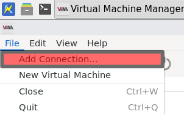
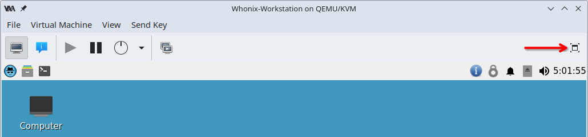
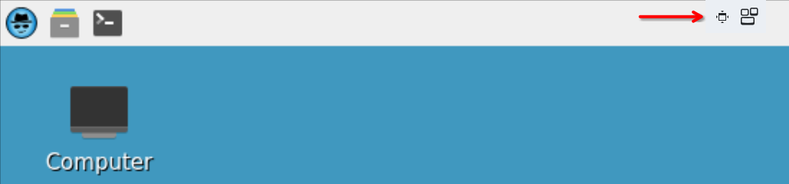

We believe security software like Whonix needs to remain Open Source and independent. Would you help sustain and grow the project? Learn more about our 14 year success story and maybe DONATE!
Post Install AdviceDocumentationQubesPrevious page: Post Install AdviceIndex page: DocumentationNext page: QubesWhonix for KVM
A shared folder allows you to access the same directory from both the host operating system (OS) and the virtual machine (VM).
This guide explains how to configure and use shared folders in Whonix.
About this KVM Page |
|---|
Support Status |
Difficulty |
Support |
Using Whonix with KVM (Kernel-based Virtual Machine)
 COMMUNITY SUPPORT ONLY : THIS WHOLE WIKI
PAGE is only supported by the community. Whonix
developers are very unlikely to provide free support
for this content. See Community Support for further information,
including implications and possible alternatives.
COMMUNITY SUPPORT ONLY : THIS WHOLE WIKI
PAGE is only supported by the community. Whonix
developers are very unlikely to provide free support
for this content. See Community Support for further information,
including implications and possible alternatives.
General
What is KVM?
For an openly developed, free and open-source software (FOSS), GPL licensed hypervisor that can run Whonix, [2] it is recommended to use Kernel-based Virtual Machine (KVM) that comes with the Linux kernel. KVM combined with the Virtual Machine Manager front-end should provide a familiar, intuitive and easy-to-use GUI. Virtual Machine Manager uses libvirt to manage KVM virtual machines.
For a detailed view of KVM's security merits, read the audit report issued by an independent security auditing firm.
Why Use KVM Over VirtualBox?
The VirtualBox developer team has made the decision to switch out the BIOS in their hypervisor. However, it now comes with one that requires compilation by a toolchain that
does not meet the definition of Free Software according to the guidelines of the Free Software Foundation. This move is considered problematic for free and open source software projects like Debian, on which Whonix is based.
The issues with the Open Watcom License are explained in this thread on the Debian mailing list. More references can be found
Besides this licensing issue, a more tangible reason to avoid VirtualBox is the security practices of Oracle, the producer of the software. Events and news in recent years (like the Snowden leaks) demonstrate there is an urgent need for increased transparency and verifiable trust in the digital world. Oracle is infamous for its lack of transparency in disclosing the details of security bugs, as well as discouraging full and public disclosure by third parties. Security through obscurity is Oracle's flawed modus operandi. [3]
Not going public with the details of vulnerabilities only leads to laziness and complacency on the part of the company that fields the affected products. One example is this historical 0day vulnerability reported privately to Oracle in 2008 by an independent security researcher. Over four years later, the vulnerability remained unfixed, demonstrating Oracle's history of failing to provide timely patches to customers so they can protect themselves.
On the VirtualBox bugtracker, ticket VirtualBox 5.2.18 is vulnerable to spectre/meltdown despite microcode being installed indicates
VirtualBox also contains significant functionality that is only available as a proprietary extension, such as USB / PCI passthrough and RDP connectivity. Based on Oracle's unfriendly track record with the FOSS community in the past -- examples include OpenSolaris and OpenOffice -- it would be unsurprising if users were charged for these restricted features in the future, or if the project was abandoned due to insufficient monetization.Statement by contributor HulaHoop.
For the opposite viewpoint, see Why use VirtualBox over KVM?
First-time User?

- Default username: user
- Default password: No password required. (Passwordless login.) [5]
 Warning:
Warning:
- If you do not know what metadata or a man-in-the-middle attack is.
- If you think nobody can eavesdrop on your communications because you are using Tor.
- If you have no idea how Whonix works.
Then read the Design and Goals, Whonix and Tor Limitations and Tips on Remaining Anonymous pages to decide whether Whonix is the right tool for you based on its limitations.
KVM Setup Instructions
Install KVM
Choose your host operating system.
Debian
Setup sudoers. Add the operating system user name to sudoers.
Become root.
su
Add the user account to the sudoer's group. Replace user with the actual operating system user name.
adduser user sudo
Reboot so group changes take effect.
reboot
Update package lists.
sudo apt update
For Debian trixie+ on Intel / AMD, install:
sudo apt install --no-install-recommends qemu-system-x86 qemu-system-gui qemu-system-modules-spice qemu-utils libvirt-daemon libvirt-daemon-driver-qemu libvirt-daemon-driver-storage libvirt-clients virt-manager gir1.2-spiceclientgtk-3.0 passt ovmf swtpm swtpm-tools safe-rm xz-utils
For Debian trixie+ on PowerPC, install:
sudo apt install --no-install-recommends qemu-system-ppc qemu-system-gui qemu-system-modules-spice qemu-utils libvirt-daemon-system libvirt-daemon-driver-qemu libvirt-daemon-driver-storage libvirt-clients virt-manager gir1.2-spiceclientgtk-3.0 passt swtpm swtpm-tools safe-rm xz-utils
Ubuntu
sudo apt install --no-install-recommends qemu-system-x86 qemu-system-gui qemu-system-modules-spice qemu-utils libvirt-daemon libvirt-daemon-driver-qemu libvirt-daemon-driver-storage libvirt-daemon-driver-network libvirt-clients virt-manager virt-viewer gir1.2-spiceclientgtk-3.0 passt ovmf swtpm swtpm-tools safe-rm xz-utils
Check the discussion about how to fix the apparmor issue [6]
Arch Linux
sudo pacman -Syu --needed qemu-system-x86 qemu-desktop qemu-img qemu-tools libvirt virt-manager virt-viewer spice-gtk passt edk2-ovmf swtpm xz
sudo systemctl enable libvirtd
Fedora
Check System Requirements
As KVM requires a CPU with virtualization extensions, check whether the system has either Intel VT or AMD-V. If the following command prints nothing, the system does not support the required virtualization extensions.
egrep -E '^flags.*(vmx|svm)' /proc/cpuinfo
Install Dependencies
To install mandatory and default packages in the virtualization group, run:
sudo dnf install --setopt=install_weak_deps=False qemu-kvm qemu-system-x86 qemu-ui-gtk qemu-ui-spice-core qemu-ui-spice-app libvirt-daemon libvirt-daemon-kvm libvirt-daemon-config-network libvirt-client virt-manager virt-viewer spice-gtk3 spice-gtk-tools qemu-img qemu-tools passt passt-selinux edk2-ovmf swtpm swtpm-tools xz
After installing packages, start the libvirtd service.
sudo systemctl start libvirtd
To start the service on boot, run:
sudo systemctl enable libvirtd
Verify that KVM kernel modules are loaded properly. If this command
lists kvm_intel or kvm_amd, KVM is properly
configured.
lsmod | grep kvm
Edit the libvirtd Configuration
System administration is limited to the root user by default. To enable a regular user, run the following commands.
Open the /etc/libvirt/libvirtd.conf file for
editing.
sudo nano /etc/libvirt/libvirtd.conf
Set the domain socket group ownership to libvirt.
unix_sock_group = "libvirt"
Adjust the Unix socket permissions for the R/W socket.
unix_sock_rw_perms = "0770"
Save and exit.
To administer libvirt as a regular user, add the user to the libvirt group. [7]
sudo usermod -a -G libvirt $(whoami)
You must log out and log back in to apply the changes.
Other Distributions
The qemu-kvm and libvirt-bin packages are
necessary. virt-manager is also required to use a graphical
user interface (which most users want). tar,
xz-utils are required to extract the Whonix images. This
software can most likely be installed using the usual distribution's
package manager.
If any of the following errors appear when later using
virsh define:
error: Failed to define domain from Whonix-Gateway_kvm.xml error: internal error Unknown controller type 'pci
Whonix-Gateway_kvm.xml:24: element pm: Relax-NG validity error : Element domain has extra content: pm Whonix-Gateway_kvm.xml fails to validate
Relax-NG validity error : Extra element devices in interleave Whonix-Gateway_kvm.xml:24: element devices: Relax-NG validity error : Element domain failed to validate content Whonix-Gateway_kvm.xml fails to validate
Then a more recent version of libvirt and KVM is likely needed.
Readers are welcome to add detailed instructions for other distributions here!
Build from Scratch
Advanced users are encouraged to build Whonix images for high security assurance.
Information
It is strongly recommended to read and apply the steps outlined in this section. Applying a known and tested configuration provides better convenience and security.
Be sure to use the qcow2 images provided by the Whonix project or built from scratch, instead of creating them from VirtualBox OVA files.[8] The qcow2 images contain important performance optimizations for KVM. [9]
If problems are encountered with free disk space, using a file system that supports sparse files is recommended. Also refer to the following forum discussion.
If Whonix libvirt images already exist, then consider a Cleanup first.
For simplicity, the Whonix images should be downloaded and stored in the home folder (/home/) so the following commands can be copied/pasted without changes.
Download Whonix
 By downloading, you acknowledge that you have read,
understood and agreed to our Terms of
Service and License
Agreement.
By downloading, you acknowledge that you have read,
understood and agreed to our Terms of
Service and License
Agreement.
GUI

stable LXQt
Optional: Digital signature verification.
Version (stable): 18.2.1.9
Only experienced users: This step is only useful and recommended for very experienced users. All other users please skip this step.
- Digital signatures are a tool enhancing download security. They are commonly used across the internet and nothing special to worry about.
- Optional, not required: Digital signatures are optional and not mandatory for using Whonix, but an extra security measure for advanced users. If you've never used them before, it might be overwhelming to look into them at this stage. Just ignore them for now.
- Learn more: Curious? If you are interested in becoming more familiar with advanced computer security concepts, you can learn more about digital signatures here: Verifying Software Signatures
Choose your verification method below. This step requires that you have already downloaded Whonix LXQt.
Read Verify the images to learn more about the verification process for the images.
Optional: Digital signature verification. Version (testers):
18.1.4.2 Only experienced users: This step is only useful and
recommended for very experienced users. All other users please skip this
step.
Choose your verification method below. This step
requires that you have already downloaded Whonix LXQt.
Read Verify the images
to learn more about the verification process for the images. 
testers LXQt

CLI
stable CLI
Optional: Digital signature verification.
Version (stable): 18.2.1.9
Only experienced users: This step is only useful and recommended for very experienced users. All other users please skip this step.
- Digital signatures are a tool enhancing download security. They are commonly used across the internet and nothing special to worry about.
- Optional, not required: Digital signatures are optional and not mandatory for using Whonix, but an extra security measure for advanced users. If you've never used them before, it might be overwhelming to look into them at this stage. Just ignore them for now.
- Learn more: Curious? If you are interested in becoming more familiar with advanced computer security concepts, you can learn more about digital signatures here: Verifying Software Signatures
Choose your verification method below. This step requires that you have already downloaded Whonix CLI.
Read Verify the images to learn more about the verification process for the images.
Optional: Digital signature verification. Version (testers):
18.1.4.2 Only experienced users: This step is only useful and
recommended for very experienced users. All other users please skip this
step.
Choose your verification method below. This step
requires that you have already downloaded Whonix CLI.
Read Verify the images
to learn more about the verification process for the images. testers CLI
Decompress
1. Change directory.
The decompression command below must be run from within the folder
where you downloaded the archive (most likely in
~/Downloads or ~/ (home) folder).
Note: Adjust the folder if you stored the archive elsewhere.
cd ~/Downloads
2. Do not use unxz! Extract the images
using GNU tar.
3. Make sure the xz-utils package is
installed on your system. [10]
If you followed the installation instructions above, this should already be the case.
4. Decompress.
If your filesystem does support
 sparse files [11]:
sparse files [11]:
tar -xSvf Whonix*.libvirt.xz
If your filesystem does not support sparse files:
tar -xvf Whonix*.libvirt.xz
5. Wait.
Be aware that the extraction process may take an exceptionally long time to complete. It is recommended to allow the terminal to run uninterrupted after executing the command to ensure successful decompression.
6. Done.
License Agreement
Read the Whonix binary license agreement via one of the following resources:
- this online link; or
- open it with a text editor; or
- use
more.
more WHONIX_BINARY_LICENSE_AGREEMENT
Press Enter to scroll down.
Indicate either A) acceptance, or B) refusal.
A) In the case of acceptance:
touch WHONIX_BINARY_LICENSE_AGREEMENT_accepted
B) In the case of denial:
touch WHONIX_BINARY_LICENSE_AGREEMENT_denied
You are welcome to attempt negotiations regarding any element of these terms by contacting us.
 By proceeding with installation, you acknowledge that you
have read, understood and agreed to our Terms of
Service and License
Agreement.
By proceeding with installation, you acknowledge that you
have read, understood and agreed to our Terms of
Service and License
Agreement.

VM Settings Modification
Optional.
Select either Before VM Import or After VM Import.
Before VM Import
This section describes XML modifications before importing a virtual machine.
Modifying a machine's XML file provides more fine-grained control over its settings than what is exposed through the virt-manager GUI. Unless you are knowledgeable about this process, editing configuration defaults is neither recommended nor necessary.
Open file Whonix-Gateway*.xml in a text editor of your
choice as a regular, non-root user.
If you are using a graphical environment, run. featherpad Whonix-Gateway*.xml
If you are using a terminal, run. nano Whonix-Gateway*.xml
Open file Whonix-Workstation*.xml in a text editor of your
choice as a regular, non-root user.
If you are using a graphical environment, run. featherpad Whonix-Workstation*.xml
If you are using a terminal, run. nano Whonix-Workstation*.xml
After VM Import
For virtual machines that were already imported.
Choose either option A) or B).
A) With an Editor
1. Choose your favorite editor.
Optional.
Configure your preferred editor to make changes. The relevant
software must already be installed, such as kwrite,
leafpad, kate, vi,
nano, vim and so on. This is done by setting
the VISUAL environment variable.
export VISUAL=kwrite
2. Edit.
Use the virsh command to open the configuration
file.
Whonix-Gateway
sudo
-E virsh -c qemu:///system edit Whonix-Gateway
Whonix-Workstation
sudo
-E virsh -c qemu:///system edit Whonix-Workstation
3. Save.
4. Done.
Editing an imported machine's XML configuration is now complete.
B) Using virt-manager
In more recent versions of virt-manager, a second option is available:
Virtual Machine Manager -> Edit ->
Preferences -> General ->
Enable XML Editing
Under the Details view for a VM, a new XML tab appears
in the GUI, allowing direct editing and saving from the VM viewer.
Importing Whonix VM Templates
The first step after extracting the archive is to import the supplied XML files. They serve as a description for libvirt and define the properties of the Whonix VMs and the networking they should use.
Import the images settings:
1. Import the Whonix-Gateway image.
virsh -c qemu:///session define Whonix-Gateway*.xml
2. Import the Whonix-Workstation image.
virsh -c qemu:///session define Whonix-Workstation*.xml
Tell libvirt to stop trying to adjust resources limits and force libvirt to skip it
Libvirt tries to set the VM process maximum core dump file size to "unlimited", but the system will blocks it because unprivileged users not allowed to raise their own hard resource limits (setrlimit).
Since there is no root access to modify system-wide limits, then we need to tell libvirt to stop trying to adjust this limit by forcing libvirt to skip resource limits otherwise you will run into an error like this:
Error starting domain: internal error: Process exited prior to exec: libvirt: error : cannot limit core file size of process 7077 to 18446744073709551615: Operation not permitted
Traceback (most recent call last):
File "/usr/share/virt-manager/virtManager/asyncjob.py", line 71, in cb_wrapper
callback(asyncjob, *args, **kwargs)
~~~~~~~~^^^^^^^^^^^^^^^^^^^^^^^^^^^
File "/usr/share/virt-manager/virtManager/asyncjob.py", line 107, in tmpcb
callback(*args, **kwargs)
~~~~~~~~^^^^^^^^^^^^^^^^^
File "/usr/share/virt-manager/virtManager/object/libvirtobject.py", line 57, in newfn
ret = fn(self, *args, **kwargs)
File "/usr/share/virt-manager/virtManager/object/domain.py", line 1384, in startup
self._backend.create()
~~~~~~~~~~~~~~~~~~~~^^
File "/usr/lib/python3/dist-packages/libvirt.py", line 1390, in create
raise libvirtError('virDomainCreate() failed')
libvirt.libvirtError: internal error: Process exited prior to exec: libvirt: error : cannot limit core file size of process 7077 to 18446744073709551615: Operation not permittedThe giant number 18446744073709551615 represents RLIM_INFINITY (unlimited).
So we need to override the memory/core limits for QEMU inside user configuration directory:
- Create new directory:
mkdir -p ~/.config/libvirt/
- Make and edit new file:
nano ~/.config/libvirt/qemu.conf
- Copy and Paste:
max_core = 0
max_processes = 0
max_files = 0- Save and exit Ctrl+x then y then Enter.
- Restart virt-manager if it's running so the changes can take effect, then start it (and VMs) normally afterward.
- Done
Image File Installation
The XML files are configured to use newly created user level path
~/.local/share/images instead of the default storage
location of /var/lib/libvirt/images. The image files can be
moved or copied, depending on storage constraints.
Notes:
- The directory must be created before copying or moving the images. To create the path [12]:
mkdir -p ~/.local/share/images
- The following steps move or copy the images so the virtual machines can boot.
Either move or copy.
Moving Whonix Image Files
Move the image files.
mv Whonix-Gateway*.qcow2 ~/.local/share/images/Whonix-Gateway.qcow2
mv Whonix-Workstation*.qcow2 ~/.local/share/images/Whonix-Workstation.qcow2
Copying Whonix Image Files
Copy the image files.
Whonix disk images are
 sparse files, meaning they expand as data is written rather than
allocating their entire size (100GB) outright. Sparse files require
special commands when they are copied to ensure they retain this
property; otherwise, they will occupy the full disk space.
sparse files, meaning they expand as data is written rather than
allocating their entire size (100GB) outright. Sparse files require
special commands when they are copied to ensure they retain this
property; otherwise, they will occupy the full disk space.
cp --sparse=always Whonix-Gateway*.qcow2 ~/.local/share/images/Whonix-Gateway.qcow2
cp --sparse=always Whonix-Workstation*.qcow2 ~/.local/share/images/Whonix-Workstation.qcow2
Manipulating QCOW2 Images
Use qemu-img to interact with KVM disk images. This tool
can resize virtual disks, convert them to other formats, and more. It is
neither necessary nor recommended to modify the official images, so
proceed cautiously and only if the procedure is well understood.
Refer to the qemu-img manual for instructions.
Encrypted Containers
It is possible to run image files from encrypted containers. sVirt protections have been confirmed to be in effect for image files stored at alternative locations.
Change the permissions on the container mount point directory so
Virtual Machine Manager can access the image. In ZuluCrypt, containers
are mounted under /run/media/private/user:
[13]
sudo chmod og+xr /run/media/private/user/$container_name
After this, in the KVM XML configuration for both the Gateway and the
Workstation, you must edit the XML and change the
source file tag to the appropriate value below:
- Gateway:
source file="/run/media/private/user/Whonix-Gateway.qcow2". - Workstation:
source file="/run/media/private/user/Whonix-Workstation.qcow2".
This ensures that the VMs can access and run the images.
Cleanup
After importing Whonix, it is recommended to delete the archives (.libvirt.xz files) and the temporarily extracted folders, or move them into a custom location. This helps avoid conflicts and confusion if a new version of Whonix is later downloaded.
To delete the archives and temporary folders, run:
Note: This may not work on some Linux distributions where
safe-rm is unavailable. In that case, use
trash-put (if the trash-cli package is
available) or rm (always available) instead.
safe-rm Whonix*
safe-rm -r WHONIX*
Start
Virtual
Machine Manager (Virt-Manager) GUI default is
qemu:///system not qemu:///session
If WS and GW not shown in the default opening of Virt-Manager, Then
this is because it assumes your VMs on default
qemu:///system, so you need to change that to
qemu:///session:
Go to Virtual Machine Manager → File →
Add Connection... → Switch Hypervisor from
QEMU/KVM to QEMU/KVM user session → Tick
Autoconnect → Connect.
Images:




After that you can first start Whonix-Gateway™, then start Whonix-Workstation™.
If the virt-manager always going to show qemu:///system
whenever you start the virt-manager later, then to solve this run:
echo "export LIBVIRT_DEFAULT_URI='qemu:///session'" >> ~/.zshrc source ~/.zshrc
(If someone is using Bash instead of Zsh, change .zshrc
to .bashrc, This tells your entire user profile including
the GUI to always target your local user session by default).
Using Whonix-Gateway with LXQt Desktop vs CLI Mode
To start the desktop environment, the Whonix-Gateway virtual machine must be assigned at least 768 MB of RAM. Otherwise, it will only boot in CLI mode. To disable startup of the included desktop environment regardless of RAM allocation, configure the RAM Adjusted Desktop Starter package settings.
Graphical User Interface (GUI)
Start Virtual Machine Manager:
Start Menu → System Tools →
Virtual Machine Manager
Start Whonix-Gateway:
click on Whonix-Gateway → click Open →
click the play symbol
Repeat the same steps for Whonix-Workstation.
Command Line Interface (CLI)
The following instructions were re-tested in September 2024.
 Warning: If the guest may be compromised, do NOT follow
this procedure! The guest will be able to write arbitrary ANSI sequences
to the host's terminal emulator, which may exploit security
vulnerabilities in the terminal and allow a VM escape.
Warning: If the guest may be compromised, do NOT follow
this procedure! The guest will be able to write arbitrary ANSI sequences
to the host's terminal emulator, which may exploit security
vulnerabilities in the terminal and allow a VM escape.
1. Open a terminal inside the VM that should be accessed through CLI.
This is required to set up the serial console VM settings.
2. Install the package:
Install package(s) serial-console-enable following these
instructions:
1 Platform specific notice.
- Non-Qubes-Whonix: No special notice.
- Qubes-Whonix: In Template.
2
 Update the package lists and upgrade the system.
Update the package lists and upgrade the system.
sudo apt update && sudo apt full-upgrade
3
Install the serial-console-enable package(s).
Using apt command line
 <code>--no-install-recommends</code> option is in most cases
optional.
<code>--no-install-recommends</code> option is in most cases
optional.
sudo apt install --no-install-recommends serial-console-enable
4 Platform specific notice.
- Non-Qubes-Whonix: No special notice.
- Qubes-Whonix: Shut down Template and restart App Qubes based on it
as per
Qubes Template Modification.
5 Done.
The procedure of installing package(s)
serial-console-enable is complete.
3. Shut down the VM.
4. Open a terminal on the host.
5. To start Whonix-Gateway, run:
sudo virsh start Whonix-Gateway
To start Whonix-Workstation, run:
sudo virsh start Whonix-Workstation
6. To interact with Whonix-Workstation via serial console, run:
sudo virsh console Whonix-Workstation
7. To exit the console session, press
Ctrl + ] (Control and closing square bracket). This will
return you to your host terminal while leaving the VM running.
8. Done.
Forum discussion: https://forums.whonix.org/t/how-do-i-enter-the-whonix-shell-from-cli/7271
Adjust Display Resolution
Prerequisite knowledge: Whonix screen wiki page
Option A: Use scaling instead.
Enable display scaling in virt-manager, disable automatic guest resizing, and then grow the window. Rather than increasing the resolution, it will just make everything bigger (and blurrier, but that's unfortunately mostly unavoidable if you want the VM's display bigger without the VM knowing that its display is bigger).Font Too Small - Can Changing Lead to Fingerprinting?
Option B: Increase stream isolation (fingerprinting risk as documented on the Whonix screen wiki page)
Start Menu → Preferences →
Displays [14]
Alternatively:
GUI Console → View →
Scale Display →
Check: Always + Auto resize VM with window.
After Installing
Read and apply the Post Installation Security Advice.
Uninstall
If you want to remove Whonix KVM VMs, the Whonix network, and Whonix images, click Expand on the right.
1. Power off the VM you want to remove.
virsh -c qemu:///session destroy Whonix-Gateway
virsh -c qemu:///session destroy Whonix-Workstation
2. Remove the KVM VM settings.
virsh -c qemu:///session undefine Whonix-Gateway
virsh -c qemu:///session undefine Whonix-Workstation
3. Delete the images.
Note: All data will be lost unless it is backed up first. Adjust the paths to the images as appropriate.
safe-rm ~/.local/share/images/Whonix-Gateway.qcow2
safe-rm ~/.local/share/images/Whonix-Workstation.qcow2
KVM Upgrade Instructions
It is strongly recommended to uninstall older Whonix versions and always use the stable release. Note that Whonix also supports in-place APT upgrades.
- Move your data out of the VM using shared folders.
- Perform the Cleanup steps.
- Install the new images.
Optional
Addgroup
If you want to add your user to the libvirt and
kvm groups, here is how it's done:
Debian (based) / Ubuntu
The following commands work in Debian and assume the simple scenario where KVM is used by the currently logged-in user. For older Ubuntu versions, note that group names vary and libvirt may be called libvirtd instead. For Ubuntu 20.04, libvirt works.
sudo adduser "$(whoami)" libvirt
sudo adduser "$(whoami)" kvm
Fedora
sudo usermod -a -G libvirt <username>
sudo usermod -a -G kvm <username>
Replace with the actual username. You must log out and log back in for changes to take effect.
Arch Linux
Other Distributions
If another distribution is in use, refer to the distribution's
manual.
- Restart libvirtd
Note: It may be necessary to reboot the computer on some systems.
Fullscreen Mode
- To enter fullscreen mode, click:

- To exit fullscreen mode, move your mouse to the top middle of the screen and click:

Multiple Whonix-Gateway
See: Multiple Whonix-Gateway.
Testing Upcoming Versions
Download the test images from the latest folder listed here. Apply the Multiple Whonix-Gateway KVM steps to run Whonix versions side by side, with the following differences:
- Rename the test Whonix images to something unique, preferably by appending the version number to the filename.
- Edit the XML templates and change the VM names.
- Import the images by following the Importing Whonix installation steps. Keep in mind the full names of the new images must be used, and do not import the network templates.
Convert Libvirt Templates to QEMU Commands
1. Export the VM template as a file:
sudo virsh dumpxml Whonix-Gateway > Whonix-Gateway.xml
2. Convert the XML file to a QEMU command:
sudo virsh domxml-to-native qemu-argv Whonix-Gateway.xml > Whonix-Gateway.args
3. Repeat the steps for the Whonix-Workstation.
Replace Whonix-Gateway with Whonix-Workstation
in the commands above.
Magic SysRq Keys
Magic SysRq keys are useful when the guest becomes unresponsive, particularly in cases where VMs are running headless and a GUI console is not available to force them to shut down from the host. [16]
Example command to shut down the Whonix Workstation from a host
console. The O at the end of KEY_O can be substituted
with any other supported
letter listed in the kernel documentation. See also
 SysRq.
SysRq.
sudo virsh send-key Whonix-Workstation KEY_LEFTALT KEY_SYSRQ KEY_O
Snapshot Migration
If the VM has snapshots that you want to preserve, the snapshot XML files of the source VM should be dumped with the following commands. [17]
1. List the snapshot names of the VM:
sudo virsh snapshot-list --name $dom
2. Dump each snapshot you want to back up:
sudo virsh snapshot-dumpxml $dom $name > file.xml
3. Restore snapshots at the destination:
sudo virsh snapshot-create --redefine $dom file.xml
4. Optional: Identify the current snapshot.
On the source VM, run:
sudo virsh snapshot-current --name $dom
On the destination VM, run:
sudo virsh snapshot-current $dom $name
Nested KVM Virtualization
It is possible to create nested KVM VMs on KVM hosts. Run the following commands as root.
Check the current setting on the host. If the result is
[Y], then nested virtualization is enabled.
sudo cat /sys/module/kvm_intel/parameters/nested
For AMD systems, use kvm_amd instead:
sudo cat /sys/module/kvm_amd/parameters/nested
If the result is [N], enable nested virtualization with
the following command and then reboot the system.
For Intel systems:
echo 'options kvm_intel nested=1' | sudo tee -a /etc/modprobe.d/qemu-system-x86.conf
For AMD systems:
echo 'options kvm_amd nested=1' | sudo tee -a /etc/modprobe.d/qemu-system-x86.conf
Host CPU instructions that include the svm and
vmx extensions are passed through to the Workstation by
default.
Compressing Disk Images
Some users find it easier to move sparse image files after compressing them into a tarball.
To re-compress files, run:
tar -Sczvf whonix.tar.gz <multiple file names separated by spaces>
Adding vCPUs
The pinning parameter cpuset='1' must be removed from
the vcpu tag in the XML settings to allow adding more cores
to a VM; otherwise, performance issues and lockups may occur. CPU
pinning is used to safeguard processes in other VMs that run
cryptographic operations from side-channel attacks in case of a
vulnerability in a cryptographic library. [18]
To add more vCPUs, increase the number between the opening and
closing vcpu tags. Alternatively, use the hardware
Details pane in Virtual Machine Manager.
If preserving CPU pinning while increasing the core count is desired, pin the vCPUs to different numbered ones compared to other sensitive VMs. Map them in a 1:1 ratio to avoid overcommitting cores, which can lead to performance problems.
3D Graphics Acceleration
Having video issues? See Videos instead.
 Warning: 3D acceleration under KVM may cause VM
instability. The steps below may not work on all hardware. If issues are
encountered such as display server crashes, application crashes,
inability to boot VMs, or graphical glitches, you should turn 3D
acceleration off.
Warning: 3D acceleration under KVM may cause VM
instability. The steps below may not work on all hardware. If issues are
encountered such as display server crashes, application crashes,
inability to boot VMs, or graphical glitches, you should turn 3D
acceleration off.
Enabling 3D acceleration is discouraged because it increases the attack surface. This is a general KVM issue and is not specific to Whonix. 3D acceleration is not needed to achieve reasonable graphics performance for desktop use cases, and enabling it likely will not provide a meaningful amount of additional desktop performance even if it does work.
(Advanced users, see: Dev/KVM#Virgl3D)
1. Ensure that your host GPU drivers are installed
and functional. If your host lacks a dedicated GPU and relies on
software rendering (CPU), install libgl1-mesa-dri and
mesa-utils on the host (if it is Debian-based) to verify
OpenGL functionality and enable software-based OpenGL rendering:
sudo apt install libgl1-mesa-dri mesa-utils
2. Modify the VM settings before or after installation, as required:
- Before Installation
- After Installation:
sudo virsh edit Whonix-Workstation
3. Locate the following section in the XML and apply the necessary changes:
- <listen type='none'/> : SPICE does not support TLS + OpenGL with remote connections, so it must be enabled locally.
- <gl enable='yes'/> : Enable OpenGL.
- <acceleration accel3d='yes'/> : Enable 3D acceleration.
Here is a full example of the relevant XML sections:
<graphics type='spice'>
<listen type='none'/>
<clipboard copypaste='yes'/>
<filetransfer enable='no'/>
<gl enable='yes'/>
</graphics>
<audio id='1' type='spice'/>
<video>
<model type='virtio' heads='1' primary='yes'>
<acceleration accel3d='yes'/>
</model>
<address type='pci' domain='0x0000' bus='0x00' slot='0x01' function='0x0'/>
</video>4. Restart your VMs if they are running.
5. Notes:
- SPICE Listen Type: Setting <listen type="socket"/> can also be used.
6. Done.
3D Graphics Acceleration - Testing
3D Graphics Acceleration - Testing - Direct Rendering Manager
Source: Arch Linux Wiki QEMU, virtio section
sudo dmesg | grep -i drm
[drm] pci: virtio-vga detected
[drm] virgl 3d acceleration enabledNote: DRM here refers to the Direct Rendering Manager. This is unrelated to Digital Restrictions Management.
3D Graphics Acceleration - Functionality Test
Install package(s) mesa-utils following these
instructions:
1 Platform specific notice.
- Non-Qubes-Whonix: No special notice.
- Qubes-Whonix: In Template.
2
 Update the package lists and upgrade the system.
Update the package lists and upgrade the system.
sudo apt update && sudo apt full-upgrade
3
Install the mesa-utils package(s).
Using apt command line
 <code>--no-install-recommends</code> option is in most cases
optional.
<code>--no-install-recommends</code> option is in most cases
optional.
sudo apt install --no-install-recommends mesa-utils
4 Platform specific notice.
- Non-Qubes-Whonix: No special notice.
- Qubes-Whonix: Shut down Template and restart App Qubes based on it
as per
Qubes Template Modification.
5 Done.
The procedure of installing package(s) mesa-utils is
complete.
Run:
glxinfo | grep rendering
The expected output is [19]:
direct rendering: Yes
3D Graphics Acceleration - Troubleshooting
The following errors are common when dealing with 3D acceleration, especially on older hardware or when configurations are incomplete. Use these examples as references when troubleshooting.
Case 1: OpenGL not found or not installed on the host (common if there is no dedicated GPU):
Error starting domain: internal error: QEMU unexpectedly closed the monitor (vm='Whonix-Workstation'): 2024-09-04T04:29:19.732050Z qemu-system-x86_64: -device {"driver":"virtio-vga-gl","id":"video0","max_outputs":1,"bus":"pcie.0","addr":"0x1"}: opengl is not available
...
libvirt.libvirtError: internal error: QEMU unexpectedly closed the monitor (vm='Whonix-Workstation'): ... opengl is not availableCase 2: Host lacks a dedicated GPU and uses an outdated CPU (GLSL version mismatch):
Error starting domain: internal error: QEMU unexpectedly closed the monitor (vm='Whonix-Workstation'): qemu_gl_create_compile_shader: compile vertex error
0:1(10): error: GLSL ES 3.00 is not supported. Supported versions are: 1.10, 1.20, and 1.00 ES
...
libvirt.libvirtError: internal error: QEMU unexpectedly closed the monitor (vm='Whonix-Workstation'): qemu_gl_create_compile_shader: compile vertex error
0:1(10): error: GLSL ES 3.00 is not supported. Supported versions are: 1.10, 1.20, and 1.00 ESCase 3: TLS enabled for remote SPICE together with 3D acceleration/OpenGL (unsupported combination):
Error starting domain: internal error: process exited while connecting to monitor: 2024-09-04T04:34:37.668627Z qemu-system-x86_64: SPICE GL support is local-only for now and incompatible with -spice port/tls-port
...
libvirt.libvirtError: internal error: process exited while connecting to monitor: ... SPICE GL support is local-only for now and incompatible with -spice port/tls-portMouse Smoothness
This setting can improve mouse movement.
As per Domain XML format: Input devices.
1. Perform VM Settings Modification.
2. Look for:
<devices>
3. Below it, append the following:
<input type='tablet' bus='virtio'/>
Forum discussion: https://forums.whonix.org/t/p-s2-mouse-movement-in-cutom-debian-workstation/19985
Shared Folder
 Warning: Deleting files within the shared folder will
move them to a hidden sub-directory called
Warning: Deleting files within the shared folder will
move them to a hidden sub-directory called .Trash-1000.
Make sure you reveal it and promptly delete it on the host to avoid data
leakage across different VM sessions.
Follow these steps to transfer data between the guest and host. It is recommended to create or assign a unique directory per snapshot to keep shared content from different security domains separate.
1 Select a folder sharing method.
virtio-9p
2 Notices.
Advantages of using virtio-9p:
- Reduced host risk: From the host's perspective, the guest
cannot create executable or
SUID-root files on the host, which may be more secure.
- Simpler setup: It is slightly simpler to set up.
Disadvantages of using virtio-9p:
- Requires world readable permissions: The shared folder must be world-readable for the guest to read its contents.
- Requires world writable permissions: The shared folder must be world-writable for the guest to write to it.
- Permissions not preserved: Files written by the guest will not have their ownership and permission info reflected on the host, which may be problematic for some developer use cases.
- Potentially slower: It may be significantly slower than
virtiofs.
3 Shutdown VM
Ensure the virtual machine is powered down.
4 Create Shared Folder on Host
On the host operating system, create a folder to be shared with the virtual machine (VM). For example, on a Linux host:
Note: Replace account user with your actual
account.
mkdir /home/user/shared
5 Set Permissions on Host Folder
Adjust permissions on the host to allow read and write access to the
folder with chmod:
Note: Replace account user with your actual
account.
chmod 777 /home/user/shared
6 Open virt-manager and Add Hardware
Click virt-manager → double-click on VM →
View → Details →
Add Hardware.
7 Select Filesystem Device
Click the Filesystem device in the list of devices on
the left side of the window.
8 Configure Filesystem Settings
- Driver:
virtio-9p - Source path:
/home/user/shared- Note: Replace account
userwith your actual account.
- Note: Replace account
- Target Path:
shared- Note: This field must contain the word
shared, regardless of the folder name. This is because this identifier is used to mount the shared folder in Whonix.
- Note: This field must contain the word
9 Disable Read-only Option
Ensure Export filesystem as readonly mount is unchecked.
[20]
10 Finalize Device Configuration
Click Finish.
11 Start the VM
Click View → Console, then click the play
button in the toolbar to start the VM.
12 Optional: Mandatory Access Control
Using Mandatory Access Control? See chapter #Mandatory Access Control below.
13 Optional: Live Mode Use
Want to use the shared folder also in live mode? See chapter #Shared Folder in Live Mode.
14 Access Shared Folder in VM
The shared folder will be accessible as /mnt/shared.
[21]
To access it via command line:
cd /mnt/shared
15 Done.
The process of setting up a shared folder with virtio-9p
has been completed.
virtiofs
2 Notices.
Advantages of using virtiofs:
- Better performance: It may be faster than
virtio-9p. - Works with restrictive host permissions: It works even if restrictive permissions are set on the shared folder on the host.
- Preserves ownership and permissions: The permissions and ownership of files written by the guest is properly reflected in the host. This may be necessary for some development use cases.
Disadvantages of using virtiofs:
- Requires
virtiofsd: It requires the installation ofvirtiofsd, which may not be installed by default with virt-manager. - Higher host compromise risk: Because file permissions are
reflected accurately on the host, the guest can write executable or even
SUID-root executable files to the host. These may be used to compromise
the host in a social engineering attack, or to escalate privileges on
the host if the host already has a compromised user account.
2 Shutdown VM
Ensure the virtual machine is powered down.
3 Create Shared Folder on Host
On the host operating system, create a folder to be shared with the virtual machine (VM). For example, on a Linux host:
Note: Replace account user with your actual
account.
mkdir /home/user/shared
4
Install virtiofsd
On Debian-based hosts (Debian, Ubuntu, Kicksecure, etc.):
Install package(s) virtiofsd following these
instructions:
1 Platform specific notice.
- Non-Qubes-Whonix: No special notice.
- Qubes-Whonix: In Template.
2
 Update the package lists and upgrade the system.
Update the package lists and upgrade the system.
sudo apt update && sudo apt full-upgrade
3
Install the virtiofsd package(s).
Using apt command line
 <code>--no-install-recommends</code> option is in most cases
optional.
<code>--no-install-recommends</code> option is in most cases
optional.
sudo apt install --no-install-recommends virtiofsd
4 Platform specific notice.
- Non-Qubes-Whonix: No special notice.
- Qubes-Whonix: Shut down Template and restart App Qubes based on it
as per
Qubes Template Modification.
5 Done.
The procedure of installing package(s) virtiofsd is
complete.
On other hosts: Install the appropriate package for your host OS.
5 Open virt-manager and Enable Shared Memory
 Despite the name, this will not opt the VM into Kernel Samepage Merging
(KSM), and should therefore be safe to use. KSM itself is dangerous and
should not be enabled, see #KSM.
Despite the name, this will not opt the VM into Kernel Samepage Merging
(KSM), and should therefore be safe to use. KSM itself is dangerous and
should not be enabled, see #KSM.
Click virt-manager → double-click on VM →
View → Details → Memory →
Enable shared memory → Apply.
6 Add Hardware in virt-manager
While still in virt-manager's VM details window, click
Add Hardware.
7 Select Filesystem Device
Click the Filesystem device in the list of devices on
the left side of the window.
8 Configure Filesystem Settings
- Driver:
virtiofs - Source path:
/home/user/shared- Note: Replace account
userwith your actual account.
- Note: Replace account
- Target Path:
shared- Note: This field must contain the word
shared, regardless of the folder name. This is because this identifier is used to mount the shared folder in Whonix.
- Note: This field must contain the word
9 Disable Read-only Option
Ensure Export filesystem as readonly mount is unchecked.
[22]
10 Finalize Device Configuration
Click Finish.
11 Start the VM
Click View → Console, then click the play
button in the toolbar to start the VM.
12 Optional: Mandatory Access Control
Using Mandatory Access Control? See chapter #Mandatory Access Control below.
13 Optional: Live Mode Use
Want to use the shared folder also in live mode? See chapter #Shared Folder in Live Mode.
14 Access Shared Folder in VM
The shared folder will be accessible as /mnt/shared.
[23]
To access it via command line:
cd /mnt/shared
15 Done.
The process of setting up a shared folder with virtiofs
has been completed.
Mandatory Access Control
Note: If your system is configured with a Mandatory Access Control framework, it might be necessary to configure exceptions to allow guests to communicate with the shared folder on the host.
Tests with AppArmor have shown it operates transparently with shared folders, without manual exception configuration.
1
On the host, chmod must be applied to the shared folder
contents to access the files.
Note: Replace account user with your actual
account.
sudo chmod 777 -R /home/user/shared
If SELinux is disabled, everything should work. If SELinux is
enabled, a policy must be added for files under the shared folder on the
host. SELinux will not allow sharing until the folder is labeled
svirt_image_t. To achieve this, add the following policy on
the host using semanage.
Note: These steps must be re-applied every time files are transferred. [24] [25]
Note: Replace account user with your actual
account.
2
Note: Replace account user with your actual
account.
sudo semanage fcontext -a -t svirt_image_t "/home/user/shared(/.*)?"
3
Note: Replace account user with your actual
account.
restorecon -vR /home/user/shared
4 Setting execute permission on the user folder itself may be necessary for the guest to start without a permission error:
sudo chmod 701 /home/user
5
Alternatively, set execute permission only for virt-manager. The name
libvirt-qemu may vary depending on the distribution:
sudo setfacl -m u:libvirt-qemu:x /home/user
6 If you are using the command line instead of virt-manager to edit the VM's device settings, add the following section to the XML:
Note: Replace account user with your actual
account.
<filesystem type='mount' accessmode='mapped'>
<source dir='/home/user/shared'/>
<target dir='shared'/>
</filesystem>Shared Folder in Live Mode
A shared folder is a folder that is shared between the host operating system (OS) and the virtual machine (VM).
In Live Mode, the shared
folder will not be mounted by default. (This behavior was implemented
starting from version 17.4.4.6 and might be subject to
change in a future version.) [26]
To enable the shared folder with read and write access in live mode, follow the instructions below.
1 Instructions from the above chapter must be applied first.
Option-specific:
- Kicksecure or derivative: If you are using Kicksecure (or a derivative such as Whonix), follow the steps below.
- Other operating systems: If you are using other operating systems, or the generic method, this is not applicable. [27]
2 Sysmaint Notice

- A
If using
user-sysmaint-split: The user must boot into the sysmaint session. For details and instructions on how to do so, see user-sysmaint-split. - B
If using
unrestricted admin mode: This sysmaint notice does not apply.
Continue with the steps below.
3
Open file
/usr/lib/systemd/system/mnt-shared-kvm.service.d/50_user.conf
in an editor with administrative ("root") rights.
1 Select your platform.
2 Notes.
- Sudoedit guidance: See
Open File with Root Rights for details on why using
sudoeditimproves security and how to use it. - Editor requirement: Close Featherpad (or the chosen text
editor) before running the
sudoeditcommand.
3 Open the file with root rights.
sudoedit /usr/lib/systemd/system/mnt-shared-kvm.service.d/50_user.conf
2 Notes.
- Sudoedit guidance: See
Open File with Root Rights for details on why using
sudoeditimproves security and how to use it. - Editor requirement: Close Featherpad (or the chosen text
editor) before running the
sudoeditcommand. - Template requirement: When using Qubes-Whonix, this must be done inside the Template.
3 Open the file with root rights.
sudoedit /usr/lib/systemd/system/mnt-shared-kvm.service.d/50_user.conf
4 Notes.
- Shut down Template: After applying this change, shut down the Template.
- Restart App Qubes: All App Qubes based on the Template need to be restarted if they were already running.
- Qubes persistence: See also
Qubes Persistence
- General procedure: This is a general procedure required for Qubes and is unspecific to Qubes-Whonix.
2 Notes.
- Example only: This is just an example. Other tools could achieve the same goal.
- Troubleshooting and alternatives: If this example does not work for you, or if you are not using Whonix, please refer to Open File with Root Rights.
3 Open the file with root rights.
sudoedit /usr/lib/systemd/system/mnt-shared-kvm.service.d/50_user.conf
4 Paste:
[Unit] ConditionKernelCommandLine=
5 Save.
6 Reboot.
7 Done.
The shared folder should now also be available with read-write access after booting into live mode.
Forum discussion: Shared folder blank running in live mode after update
USB Passthrough
 Warning: Only connect USB devices to Whonix-Workstation
when it is in a clean, trusted state! The only safe and recommended way
to move files out of a VM is through Shared Folders.
Warning: Only connect USB devices to Whonix-Workstation
when it is in a clean, trusted state! The only safe and recommended way
to move files out of a VM is through Shared Folders.
 Warning: This isolation method is not foolproof for
sandboxing untrusted USB devices. A sophisticated attacker could tweak a
BadUSB payload to crash the guest, causing the host to take control of
the device and parse malicious code.
Warning: This isolation method is not foolproof for
sandboxing untrusted USB devices. A sophisticated attacker could tweak a
BadUSB payload to crash the guest, causing the host to take control of
the device and parse malicious code.
Libvirt supports passing through a computer's integrated webcam or other USB devices. [28] [29] Debian contributors have disabled USB auto-redirection by default to prevent accidental passthrough of trusted USB devices to untrusted guests. [30] [31] These changes must be temporarily reverted. Once finished, restore safe defaults by following the steps in reverse order.
Limitations: These steps apply to USB storage devices only. Portable devices such as phones and tablets are problematic and may not be successfully auto-redirected.
The USB drive will only remain isolated while Whonix-Workstation is running. Do not close the VM GUI window or the device will be reassigned to the host. The VM window must be in focus (either mouse grabbed or fullscreen mode is safest) when plugging in the device. The VM window may be minimized after the device is detected in the guest. It is unnecessary to wait for the VM to fully boot.
1. Edit the libvirt glib-2.0 schema.
sudo nano /usr/share/glib-2.0/schemas/10_virt-manager.gschema.override
2. Change the default contents.
[org.virt-manager.virt-manager.console]
auto-redirect=falseShould be changed to:
[org.virt-manager.virt-manager.console]3. Recompile the schemas so changes take effect. [32]
sudo glib-compile-schemas /usr/share/glib-2.0/schemas/
4. Close all instances of Libvirt/Virtual Machine Manager and restart them.
5. Adjust VM settings.
1. In the Details pane, change the Controller USB device model:
Hypervisor Default → USB 2
2. While Whonix-Workstation is turned off, add four USB Redirection devices (or as many as the host has USB ports).
Whonix-Workstation viewer window → View →
Details → Add Hardware →
USB Redirection
3. Start Whonix-Workstation and select the device to passthrough:
Whonix-Workstation viewer window → File →
Redirect USB →
Choose: Webcam (or other USB Device)
Note: This step must be performed on demand, as passthrough is not permanent across reboots. This prevents accidental passthrough when the VM is in an untrusted state.
6. Boot Whonix-Workstation and connect the USB thumb drive.
7. Done.
The thumb drive should now be visible in the guest only.
Enable Microphone Input
Microphone input to guests can be useful for VoIP and similar applications, but it also introduces risks. It is good practice to disable the microphone on the host system in sound settings whenever it is not in active use.
By default, the shipped configuration includes only a speaker (without a microphone) to prevent malware inside the VM from eavesdropping on the user.
To enable microphone input for specific guests, edit the VM configuration and change:
→
Creating Multiple Internal Networks
Open the Whonix network XML file and change the name
attribute to something different from the internal network that is
currently running.
For example: Whonix-Internal2,
Whonix-Internal3, and so on.
The default network name in use is Whonix-Internal.
Alternative Configurations
Libvirt supports a variety of containment mechanisms. Currently
supported mechanisms include KVM on the x86_64 platform and
QEMU, but more configurations may be added in the future.
If hardware virtualization extensions are available, it is recommended to always use KVM.
To use another configuration, import its XML file with
virsh.
How to Leave KVM when no X11 is Running
In the hypothetical situation where a user becomes "trapped" in a virtual console
inside a VM without a graphical desktop environment (labwc Wayland
compositor) (for example, after running
sudo systemctl stop greetd.service), it is still possible
to switch back to the host.
In other words, if the graphical desktop environment crashes or is terminated, the user may be left with a black VM window. It is possible to exit this state.
The emulated tablet device normally prevents the mouse from being captured by the guest, but if it happens, use the following key combination:
Press Ctrl_L+Alt_L
Todo: Re-test these instructions with Wayland running on the host.
Setting up gdb to work with qemu-kvm via libvirt
To debug a Linux kernel running as a KVM guest, the -s
parameter must be specified for the qemu-kvm command line.
When using libvirt and virt-manager to manage virtual machines (instead
of invoking KVM directly), this requires editing the VM's XML
configuration so that -s is passed to
qemu-kvm.
1. Open the XML configuration.
sudo virsh edit $guestvm
Here, $guestvm is the name of the VM managed by
virt-manager. This opens the XML configuration in your editor.
2. Edit the XML configuration.
Change the first line from:
<domain type='kvm'>To:
<domain type='kvm' xmlns:qemu='https://libvirt.org/schemas/domain/qemu/1.0'>Add the following under the level:
<qemu:commandline>
<qemu:arg value='-s'/>
</qemu:commandline>3. Save the XML configuration.
After saving and quitting the editor, the new configuration will take
effect. When the VM is started, a local TCP port (1234 by
default) will be available for remote debugging with
gdb.
4. Connect to the local TCP port.
From gdb running on the host machine, use:
target remote localhost:1234Source: [33]
EFI
https://forums.whonix.org/t/kvm-virtual-tpm-aka-the-universal-smartcard/8244/10
https://forums.whonix.org/t/uefi-secure-boot-support/7943/7
Secure Boot
See above.
Unsafe Features
The features below have serious security implications and should not be used. This applies to all hypervisors in general.
LVM Storage
QCOW2 virtual disk images are the recommended and default storage format for KVM. LVM or any other storage mechanism must be avoided for security and privacy. LVM misconfiguration has serious security consequences and exposes the host filesystem to the processes running on the guest. [34]
In the event a virtual disk was previously used by one VM and is then reused by another VM, data created by the first VM can easily be recovered and exfiltrated by malicious forensics tools run in the second VM at a later time. This is extremely dangerous and can expose all kinds of information originally created in a VM of higher trust level. This leads to deanonymization, past session linking and theft of sensitive information and keys. [35]
HugePages
THP/Hugepages aid rowhammer attacks [36] and memory de-duplication attacks (see KSM below) and therefore must be disabled for the guest and on the host. Research suggests that Debian hosts do not enable this feature and it is also disabled in cloud tenancy environments.
Memory Ballooning
Memory ballooning can potentially be abused by malicious guests to mount rowhammer attacks on the host. [37]
Clipboard Sharing
Clipboard sharing allows you to copy and paste text between the host and a virtual machine (VM).
This documentation explains the status of clipboard sharing in Whonix and its derivatives such as Whonix.
 Version-specific notice:
Version-specific notice:
- Whonix (and Whonix) version 17:
- Status: Functional
- Whonix (and Whonix) version 18:
- Status: Disabled/Broken
- Workaround: Use
wl-clipboardandxclipto sync Xwayland and Wayland clipboards as documented below. - Alternative: Use a text file inside the Shared Folder to exchange text between the host and VM.
- Reason for breakage: Port from X11 to Wayland (security enhancement).
- Virtual Machine Manager feature request: Add
support for
dbusdisplay - spice-vdagent feature request:: Add support for Wayland clipboard
- Forum discussion: Whonix 18 - Wayland based - KVM - Clipboard Sharing - Broken
For Clipboard Sharing Security Considerations, please press Learn More on the right side.
You may wish to leave clipboard sharing disabled for the following reasons:
- To prevent the accidental copying of a link to a website that was visited anonymously to the non-anonymous host browser (or vice versa).
- To stop malware in Whonix Workstation from pilfering sensitive info from the clipboard.
Clipboard sharing is disabled in Whonix 18 and higher due to security concerns. If you wish to enable it:
1. Open the VM configuration file for editing.
2. Locate the following setting.
3. Change it to:
4. Save the file and restart the VM.
5. In the VM, install the xclip and
wl-clipboard packages:
sudo apt install xclip wl-clipboard
6. Done.
Note that clipboard sharing will not work transparently with most apps due to limitations imposed by Wayland. The clipboard will be synced with Xwayland transparently, but the Wayland compositor will not see this. Therefore, the clipboard must be manually synced between Xwayland and Wayland.
To transfer Xwayland's clipboard to Wayland (for transferring text from host to guest):
1. Open a terminal window in the guest.
2. Run:
DISPLAY=:0 xclip -o | wl-copy --type text/plain
3. Done.
To transfer Wayland's clipboard to Xwayland (for transferring text from guest to host):
1. Open a terminal window in the guest.
2. Run:
wl-paste | DISPLAY=:0 xclip -selection clipboard
3. Done.
KSM
KSM is a memory de-duplication feature that conserves memory by combining identical pages across VM RAM, but it is not enabled by default. Enabling this feature is dangerous because it allows cross-VM snooping by a malicious process. [38] It is capable of inferring what programs/pages are being visited outside the VM. [39] This feature is disabled in cloud tenancy environments and can also allow attackers to modify/steal APT keys and source lists of the host. [40]
File-system Dedupe
Similar to KSM memory dedupe, filesystem dedupe introduces data leaks that violate hypervisor boundaries. The presence of certain files can be confirmed. These may develop into more advanced attacks on security in the future just like KSM related attacks have. ZFS and Btrfs have dedupe features but they are not enabled by default and should be avoided for high security environments. [41]
Device Passthrough
Both USB and PCI device passthrough permit advanced attackers to flash the firmware of those devices and infect the host or other VMs. [42]
XML Settings
For more information on settings, please refer to the Libvirt manual.
Troubleshooting
Storage pool is not running
The common/default behavior is that the default storage
pool should be running and set to autostart, but if that is not the
case:
Error starting domain: unsupported configuration: storage pool 'default' containing volume 'Whonix-Gateway.qcow2' is not active
Traceback (most recent call last):
File "/usr/share/virt-manager/virtManager/asyncjob.py", line 71, in cb_wrapper
callback(asyncjob, *args, **kwargs)
~~~~~~~~^^^^^^^^^^^^^^^^^^^^^^^^^^^
File "/usr/share/virt-manager/virtManager/asyncjob.py", line 107, in tmpcb
callback(*args, **kwargs)
~~~~~~~~^^^^^^^^^^^^^^^^^
File "/usr/share/virt-manager/virtManager/object/libvirtobject.py", line 57, in newfn
ret = fn(self, *args, **kwargs)
File "/usr/share/virt-manager/virtManager/object/domain.py", line 1384, in startup
self._backend.create()
~~~~~~~~~~~~~~~~~~~~^^
File "/usr/lib/python3/dist-packages/libvirt.py", line 1390, in create
raise libvirtError('virDomainCreate() failed')
libvirt.libvirtError: unsupported configuration: storage pool 'default' containing volume 'Whonix-Gateway.qcow2' is not activeThen here is how to start defaultand enable
autostart:
virsh pool-start default && virsh pool-autostart default
- Check the pool info:
virsh pool-info default
Should give:
Name: default
UUID: xxxxxxxx-xxxx-xxxx-xxxx-xxxxxxxxxxxx
State: running
Persistent: yes
Autostart: yes
Capacity: xx.xx GiB
Allocation: xx.xx GiB
Available: xx.xx GiB- Done
vhost-vsock device
If you get this error when trying to run WS:
Error starting domain: unsupported configuration: unable to open vhost-vsock device
Traceback (most recent call last):
File "/usr/share/virt-manager/virtManager/asyncjob.py", line 71, in cb_wrapper
callback(asyncjob, *args, **kwargs)
~~~~~~~~^^^^^^^^^^^^^^^^^^^^^^^^^^^
File "/usr/share/virt-manager/virtManager/asyncjob.py", line 107, in tmpcb
callback(*args, **kwargs)
~~~~~~~~^^^^^^^^^^^^^^^^^
File "/usr/share/virt-manager/virtManager/object/libvirtobject.py", line 57, in newfn
ret = fn(self, *args, **kwargs)
File "/usr/share/virt-manager/virtManager/object/domain.py", line 1384, in startup
self._backend.create()
~~~~~~~~~~~~~~~~~~~~^^
File "/usr/lib/python3/dist-packages/libvirt.py", line 1390, in create
raise libvirtError('virDomainCreate() failed')
libvirt.libvirtError: unsupported configuration: unable to open vhost-vsock deviceGo to virt-manager → Press on
Whonix-Workstation → Then click on Open from
the top bar → Press on the light bulb (Virtual hardware
details) → Right-Click on VirtiO VSOCK then remove it.
WS will start normally.
Note: We don't include a vsock virtual device (this is not to be confused with vhostuser). Vsock by default is a host guest communication channel that could be harnessed by qemu-guest-agent. It cannot be used for inter guest communication unless the vsock-bridge (a tool by its author) is used to connect two VMs vsockets.
Videos
Enabling 3D Graphics Acceleration may not be required for watching videos (e.g. YouTube).
By adding vCPUs, a VM can play videos smoothly without 3D acceleration. [43]
Request operation not valid: blkio device weight is valid only for bfq or cfq scheduler
Error starting domain: Request operation not valid: blkio device weight is valid only for bfq or cfq schedulerAs of March 2019, the blkio throttling feature appears missing/unsupported on some Linux distributions (e.g. Arch Linux, Ubuntu 20.04). This causes VM startup failures. [44]
Workaround: remove the feature from the VM config.
1. Edit the configuration file.
sudo virsh edit Whonix-Gateway
2. Remove the following setting.
<blkiotune>
<weight>250</weight>
</blkiotune>3. Save.
4. Repeat steps 1 to 3 for Whonix-Workstation.
5. Save and start the VMs.
6. Done.
- The
pvspinlockfeature may also be unsupported; removing it resolved the issue in some cases.
Forum discussion: Issues starting VMs in KVM (blkio device weight error)
cannot set CPU affinity on process 1994: invalid argument
Example error:
libvirt.libvirtError: cannot set CPU affinity on process 1994: invalid argumentOr: [45]
Domain startup error: could not match processor to process 6962: Invalid argumentLonger log:
Traceback (most recent call last):
File "/usr/share/virt-manager/virtManager/asyncjob.py", line 75, in cb_wrapper
callback(asyncjob, *args, **kwargs)
File "/usr/share/virt-manager/virtManager/asyncjob.py", line 111, in tmpcb
callback(*args, **kwargs)
File "/usr/share/virt-manager/virtManager/libvirtobject.py", line 66, in newfn
ret = fn(self, *args, **kwargs)
File "/usr/share/virt-manager/virtManager/domain.py", line 1400, in startup
self._backend.create()
File "/usr/lib/python3/dist-packages/libvirt.py", line 1080, in create
if ret == -1: raise libvirtError ('virDomainCreate() failed', dom=self)
libvirt.libvirtError: cannot set CPU affinity on process 1994: invalid argumentThis occurs because cpuset='1' is the default to reduce
the risk of side-channel attacks on cryptographic operations. However,
some older hardware is incompatible.
Solution:
2. Remove:
cpuset='1'
3. Save and restart the VM.
4. Done.
- Forum discussion: Cannot set CPU affinity error
- Related: Whonix 15: VM slow after increasing CPU cores
- Adding vCPUs
Arch Linux Users
See: Request operation not valid: blkio device weight is valid only for bfq or cfq scheduler
Ubuntu Users
See: Request operation not valid: blkio device weight is valid only for bfq or cfq scheduler
Reboot Checklist
- Did you reboot after installing KVM?
- Did you reboot after adding your Linux user account to the required Linux user groups?
Include this info in support requests.
Unable to connect to libvirt
Error:
Unable to connect to libvirt.
Verify that the 'libvirtd' daemon is running.
Libvirt URI is: qemu:///systemMake sure you have added the groups and rebooted.
Unable to open a connection to the libvirt management daemon
Error:
Unable to open a connection to the libvirt management daemon.
Libvirt URI is: qemu:///system
Verify that:
- The 'libvirtd' daemon has been startedCheck services:
sudo systemctl restart qemu-kvm.service ; echo $? sudo systemctl restart libvirtd.service ; echo $? sudo systemctl restart libvirt-guests.service ; echo $?
Expected output: Nothing.
If this does not help, it may be a permissions problem.
hda-duplex not supported in this QEMU binary
- Potential cause: User is in
libvirtgroup but notkvm. - Alternative potential fix: Change the sound model.
From:
<sound model='ich6'>To:
<sound model='ac97'>process exited while connecting to monitor: ioctl(KVM_CREATE_VM) failed
Error:
Error starting domain: internal error: process exited while connecting to monitor: ioctl(KVM_CREATE_VM) failed: 16 Device or resource busy
failed to initialize KVM: Device or resource busyCause: Another hypervisor (e.g. VirtualBox) is running. Two hypervisors cannot run concurrently.
error: unsupported configuration: spice graphics are not supported with this QEMU
See: https://forums.whonix.org/t/error-s-when-importing-vm-templates-kvm/19464
Fix:
sudo apt install qemu-system
Permissions Check
ls -la /var/run/libvirt/libvirt-sock
VT-x / SVM Errors
Example error messages:
invalid argument: could not find capabilities for domaintype=kvminvalid argument: could not get preferred machine for /usr/bin/qemu-system-x86_64 type=kvm
These errors occur when the host's hardware virtualization extensions are not available for KVM. Possible reasons include:
- A) Another hypervisor is running on the system.
- B) An anti-virus suite is blocking virtualization.
- C) Virtualization support is not present or not enabled in the machine BIOS.
Solution:
1. Enter the BIOS/UEFI setup menu of your machine. For general guidance, see: How to Change BIOS Settings.
2. Enable hardware virtualization. This may be listed under different names depending on your system:
VT-xAMD-VVirtualizationSVM modeMIT(sometimes underAdvanced Coresettings)
3. Save changes.
4. Reboot.
5. Done.
Potential workaround if hardware virtualization is unavailable: QEMU
VT-x vs VT-d
VT-x/AMD-V: Required for Whonix KVM. See VT-x / SVM Errors above.VT-d/IOMMU/AMD-Vi: Whonix KVM does not require VT-d.
Add Version Numbers to Support Request
If you encounter problems, always include the versions of the key virtualization packages in your support request. On Debian-based systems, you can check the versions of libvirt-bin, qemu-kvm, and virt-manager with:
dpkg-query --show --showformat='${Package} ${Version} \n' libvirt-bin qemu-kvm virt-manager
Check Groups
Run the following commands to verify your user and group memberships.
whoami
The output should be your Linux account user name (for example,
user). It should not be root.
groups
The output should include both the libvirt and
kvm groups. [46]
If these groups are missing, ensure you have added groups and then rebooted the system.
Sound
No audio inside VM? Try unmuting and increasing the volume.
https://forums.whonix.org/t/no-audio-in-whonix-kvm/17642
Testing with a Debian VM
Before diving into issues related to Whonix, it's a good idea to first ensure that the underlying platform and software are functioning correctly.
- Start by testing the KVM host software as if you've never encountered Whonix. This will give you a baseline.
- As a next step, try using a VM that isn't based on Whonix. A good
candidate would be Debian
trixie. - If you continue to face issues with the Debian VM, it indicates that the problem isn't specific to Whonix. Such issues that are unspecific to Whonix should be tackled according to these guidelines:
Support
Whonix KVM maintainer availability is mostly limited to the User Help Forum.
Questions on Telegram, Matrix, IRC, Reddit, or similar platforms will most likely not receive attention from the Whonix KVM maintainer.
See also Support.
User Help Forum
Alternative Guides
For alternative installation guides contributed by community members, see: Minimalized Installation.
Known Issues
Host VPNs
- No Internet Connection inside Whonix-Workstation KVM with NordVPN with Kill-Switch on Host
- Failure to connect when VPN on host
Potential solution: → #Development Help Wanted
- https://forums.whonix.org/t/help-welcome-kvm-development-staying-the-course/166/546
- KVM static internal networking without host bridge interface (virbr)
- QEMU/KVM feature request: Isolated network between VMs not visible to the host
Intel 3rd/4th Gen CPUs
Performance is markedly degraded on 3rd and 4th generation Intel CPUs, as reported by a user on the forums and confirmed. Therefore, these should be avoided. [47]
VM disk corruption after first boot
On Whonix 17, some users have reported that either Whonix-Gateway or Whonix-Workstation only boots into a "PERSISTENT Mode" option once. [48] Subsequent attempts result in an inability to boot into any mode whatsoever. This appears to be caused by partition table corruption after the first boot. The cause is currently unknown. Whonix 18 and later do not seem to be affected.
Users who encounter this issue should try the following steps: [49]
- Delete the affected VM.
- Re-define the VM from the corresponding XML file as documented Importing Whonix VM Templates.
- Copy the VM's disk image to
/var/lib/libvirt/imagesas documented Image File Installation. - On first boot, select
PERSISTENT Mode | SYSMAINT Session | system maintenance tasksfor Whonix-Workstation, orPERSISTENT Mode | USER Session | daily activitiesfor Whonix-Gateway. - Open a terminal, and install all updates by running
upgrade-nonroot. - Reboot the affected VM.
If the same issue occurs, Verify the images. If your Whonix download is corrupted, re-download it and try again.
Development
Development Help Wanted
- Using
hubportto avoid KVM network interfaces being visible on the host operating system, this would likely fix some Whonix KVM issues with host operating system firewalls and VPNs
Footnotes
- re-creation
- There are also Download other platforms.
- What
is "security through obscurity":
The basis of STO has always been to run your system on a "need to know" basis. If a person doesn't know how to do something which could impact system security, then s/he isn't dangerous. ... Nowadays there is also a greater need for the ordinary user to know details of how your system works than ever before, and STO falls down as a result. Many users today have advanced knowledge of how their operating system works, and because of their experience will be able to guess at the bits of knowledge that they didn't "need to know". This bypasses the whole basis of STO, and makes your security useless.
- https://forums.virtualbox.org/viewtopic.php?f=7&t=89395
-
Rationale for Change from Default Password changeme to Empty Default
Password
- https://forums.whonix.org/t/whonix-gateway-connects-to-tor-however-whonix-workstation-does-not/23334/17
- Otherwise the sudo password is required every time virt-manager is started.
- Manually converting images from .ova to .qcow2 is no longer recommended, since .qcow images can be downloaded from the Whonix project.
- As per build-steps.d/4400_convert-raw-to-qcow2 , these are "-o cluster_size=2M" and "-o preallocation=metadata".
- https://forums.whonix.org/t/tar-child-xz-cannot-exec-no-such-file-or-directory-install-xz-utils-package/16708/7
- tar --extract --sparse --verbose --file=Whonix*.libvirt.xz
- Another less practical and not guaranteed method could be used by
running
virt-manager -c qemu:///session. This will open virt-manager, triggering the default storage path, and the user will see the Whonix images there. However, if the user tries to run any of them, they will not work because the images have not yet been transferred to the storage path (so it has a practical issue if the user is not aware of this). Also, there is no guarantee that it will work in every case on every distribution. - https://forums.whonix.org/t/cant-use-var-lib-libvirt-images-for-whonix-images-what-to-do-about-apparmor/7192/3
- https://forums.whonix.org/t/no-auto-resize-with-qxl-driver/7145/3
- By default, Debian does not use
sudo, so groups can be added usingusermod. If your user isfoo, the following commands will work. usermod -a -G libvirt foo And: usermod -a -G kvm foo - https://dustymabe.com/2012/04/21/send-magic-sysrq-to-a-kvm-guest-using-virsh/
- https://serverfault.com/questions/434064/correct-way-to-move-kvm-vm/648871#648871
- * https://forums.whonix.org/t/guest-systems-sees-cpu-of-the-host/1413/28 * https://forums.whonix.org/t/guest-systems-sees-cpu-of-the-host/1413/30
- https://wiki.debian.org/Mesa#A3D_acceleration
- If you do not wish to write to the folder from within the VM, you are free to enable this setting.
- This is hardcoded in
/usr/libexec/vm-config-dist/mount-shared. - If you do not wish to write to the folder from within the VM, you are free to enable this setting.
- This is hardcoded in
/usr/libexec/vm-config-dist/mount-shared. - https://nts.strzibny.name/how-to-set-up-shared-folders-in-virt-manager/
- https://unix.stackexchange.com/questions/60799/selinux-interfering-with-host-guest-file-sharing-using-kvm
- grub-live: * VirtualBox
unit override:
/usr/lib/systemd/system/mnt-shared-vbox.service.d/30_grub-live.conf* KVM unit override:/usr/lib/systemd/system/mnt-shared-kvm.service.d/30_grub-live.conf - Because these systems do not use the
mnt-shared-kvm.servicesystemd unit by Whonix. - https://bugzilla.redhat.com/show_bug.cgi?id=1135488
- https://askubuntu.com/questions/564708/qemu-kvm-virt-manager-passthrough-of-usb-webcam-to-windows-7-enterprise-creates
- https://bugs.debian.org/cgi-bin/bugreport.cgi?bug=765016
- https://salsa.debian.org/libvirt-team/virt-manager/-/commit/d81fd3c3af1abde1fa0e2bf3b79643f36836f45b
- https://docs.gtk.org/gio/
- https://gymnasmata.wordpress.com/2010/12/02/setting-up-gdb-to-work-with-qemu-kvm-via-libvirt/
- https://access.redhat.com/documentation/en-us/red_hat_enterprise_linux/6/html/virtualization_administration_guide/sect-virtualization-adding_storage_devices_to_guests-adding_hard_drives_and_other_block_devices_to_a_guest
- * https://github.com/fog/fog/issues/2525 * https://news.ycombinator.com/item?id=6983097
- https://arxiv.org/pdf/1507.06955v1.pdf
- https://www.whonix.org/pipermail/whonix-devel/2016-September/000746.html
- Dedup Est Machina: Memory Deduplication as an Advanced Exploitation Vector
- https://web.archive.org/web/20130210040731/https://staff.aist.go.jp/c.artho/papers/EuroSec2011-suzaki.pdf
- * Flip Feng Shui: Hammering a Needle in the Software Stack * https://archive.ph/aB7Kg
- https://mjg59.dreamwidth.org/55638.html
- https://docs.openstack.org/security-guide/compute/hardening-the-virtualization-layers.html#physical-hardware-pci-passthrough
- https://forums.whonix.org/t/desktop-renders-slowly-despite-high-resource-spec/19727/18
- https://forums.whonix.org/t/problem-starting-whonix-14-after-upgrade-unable-to-write-to-sys-fs-cgroup-blkio-machine-slice-machine-qemu/6999/5
- https://forums.whonix.org/t/i-cannot-start-the-workstation-in-kvm/21868
- If you used
suorsudo su(i.e. switched to therootaccount) before running: sudo adduser "$(whoami)" libvirt sudo adduser "$(whoami)" kvm then it will fail because$(whoami)will expand toroot, not your regular account name. This means the required groups will not be added to your user account. - https://forums.whonix.org/t/poor-performance/13385/6
- * https://forums.whonix.org/t/unable-to-boot-whonix-workstation/22355 * https://forums.whonix.org/t/gateway-boots-to-blank-screen-and-then-displays-error-message-cant-find-anything-regarding-this-anywhere/22154
- https://forums.whonix.org/t/unable-to-boot-whonix-workstation/22355/2
Categories: Documentation